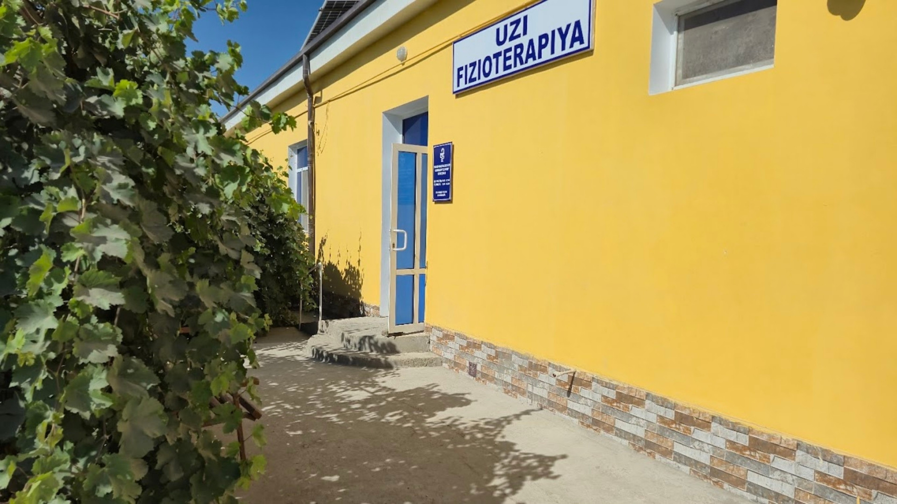
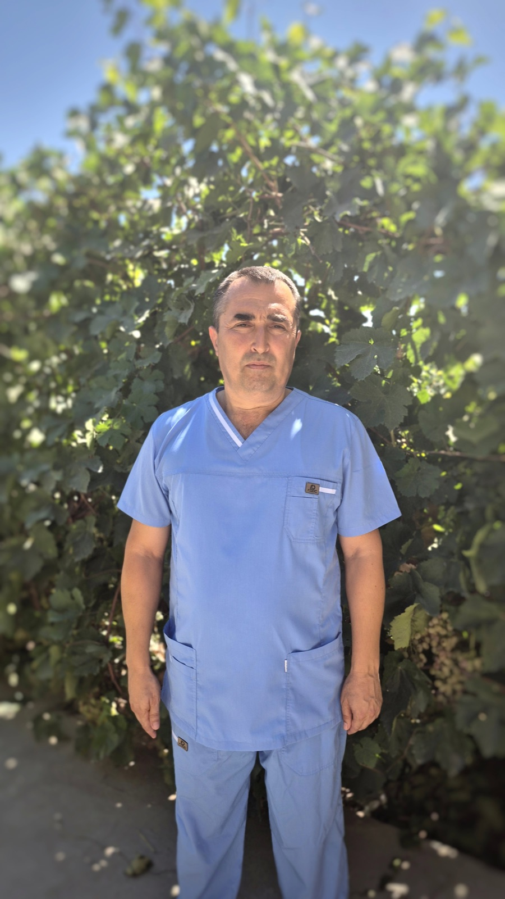
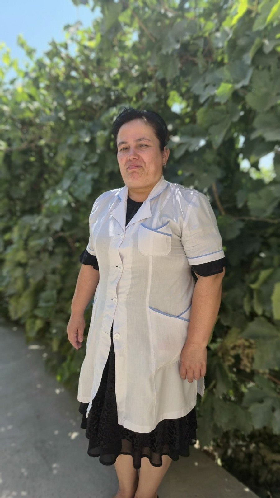

Ish vaqti
Dushanba – Shanba, 09:00 – 17:00. Tushlik: 13:00 – 14:00.
Xonqa · Xorazm viloyati
Madrimov Clinic — Xonqada UZI diagnostika, fizioterapiya va shifokor maslahati. Qabulga telefon yoki Telegram orqali bir necha daqiqada yoziling.

Dushanba – Shanba, 09:00 – 17:00. Tushlik: 13:00 – 14:00.
2-B, Sheroziy ko'chasi, Xonqa, Xorazm viloyati.
Telefon yoki Telegram orqali qulay vaqtni kelishib oling.
Xizmatlar
Diagnostikadan tiklanishgacha — tushunarli maslahat, ehtiyotkor ko'rik va har bir bemorga individual yondashuv.
Zamonaviy apparatda ichki a'zolar holatini nurlanishsiz, og'riqsiz baholash.
Bel, bo'g'im va mushak og'riqlarida shifokor nazorati ostidagi muolajalar.
Belgilar, avvalgi xulosalar va tekshiruv natijalari asosida keyingi qadamlar tushunarli qilib belgilanadi.
Qaysi xizmat kerakligini bilmayapsizmi? Qo'ng'iroq qiling — yo'naltirib yuboramiz: +998 90 579 04 50
Nega aynan biz
15 yildan ortiq amaliyot va minglab bemorlar bilan ishlash tajribasi.
Tashxis va davolash rejasi oddiy tilda, shoshilmasdan tushuntiriladi.
Ortiqcha tekshiruv va xarajatlarsiz — holatingizga mos aniq reja.
Klinika Xonqa markazida — uzoqqa bormasdan sifatli tibbiy xizmat.
Qanday ishlaydi
Telefon yoki Telegram orqali qulay kun va vaqtni tanlang.
Avvalgi xulosa va natijalarni olib keling — ko'rik va tekshiruv o'tkaziladi.
Natijalar tushuntiriladi, davolash rejasi va keyingi qadamlar belgilanadi.
Jamoa
Jamoa mahalliy bemorlar bilan uzoq yillik ishonch, samimiy muloqot va amaliy natijaga tayanib ishlaydi.

Fizioterapiya
UZI diagnostika

Hamshira
Bemorlar fikri
Fikrlar bemorlarning shaxsiy tajribasiga asoslangan. Tibbiy natija har bir bemorda alohida baholanadi.
Google xaritada fikr qoldirish →Madrimov klinikasiga ko'p yildan beri UZI diagnostika uchun kelaman. Xizmat tez, tushunarli va e'tiborli.
Oyimjon Matniyazova
Fizioterapiya muolajalari bel og'rig'imni boshqarishda yordam berdi. Shifokorlar muammoni tushuntirib, reja bilan ishlashadi.
Solay Sobirov
Klinika haqida
Qisqa video va ijtimoiy tarmoqlar orqali klinikadagi muhit, jamoa va yangiliklar bilan tanishishingiz mumkin.
Savol-javob
Javob topolmadingizmi? Telefon yoki Telegram orqali so'rang — tez javob beramiz.
Navbatsiz kutmaslik uchun oldindan yozilishni tavsiya qilamiz — telefon yoki Telegram orqali bir daqiqada yozilasiz.
Avvalgi tekshiruv natijalari, xulosalar va qabul qilayotgan dorilaringiz ro'yxati bo'lsa — olib keling. Bu shifokorga to'liq manzarani ko'rishga yordam beradi.
Tekshiruv turiga bog'liq: ba'zilariga och qoringa kelish talab qilinadi. Yozilayotganingizda aniq tavsiya beramiz.
UZI nurlanishsiz tekshiruv bo'lib, homiladorlik kuzatuvida keng qo'llaniladi. Tekshiruv shifokor tavsiyasi bo'yicha o'tkaziladi.
Dushanbadan shanbagacha, 09:00 dan 17:00 gacha. Tushlik: 13:00 – 14:00. Yakshanba — dam olish kuni.
Aloqa
Qabulga yozilish yoki xizmatlar bo'yicha savollar uchun telefon, Telegram yoki Instagram orqali bog'laning.
2-B, Sheroziy ko'chasi, Xonqa, Xorazm viloyati